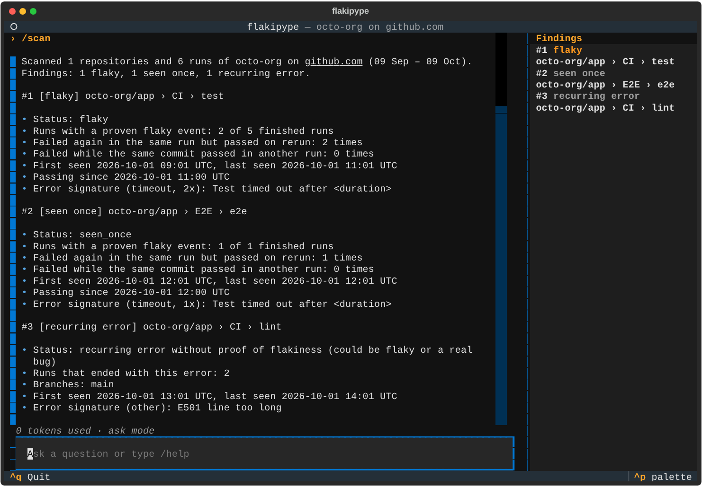
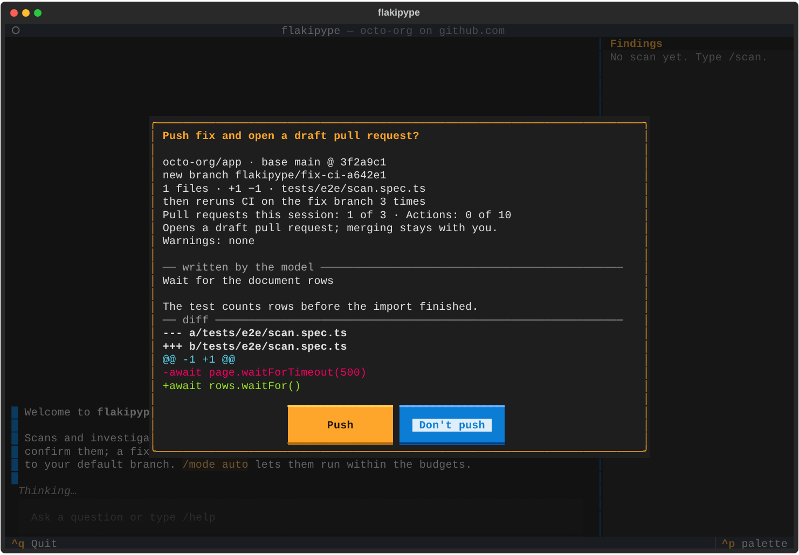

Findet instabile Jobs
Liest deine Workflow-Läufe und bringt Jobs, die fehlschlugen und dann beim Rerun oder auf demselben Commit durchliefen, in eine Rangfolge, mit Fehlersignaturen, die gleichartige Fehlschläge gruppieren.
Ein agentisches Kommandozeilenwerkzeug für Linux. Richte es auf einen GitHub-Benutzer oder eine Organisation: Es durchsucht die Workflow-Läufe, bewertet, wie instabil jeder Job ist, erklärt die wahrscheinliche Ursache mit Belegen und behebt sie per Draft-PR, überprüft durch erneutes Ausführen des Fix-Branches.
Stand: Version 0.2.0. Einrichtung, Scannen, Untersuchungen durch den Agenten, der Chat, bestätigte Reruns und Dispatches, Korrekturen als Draft-PRs und unbeaufsichtigte Läufe per systemd-Timer funktionieren.

Liest deine Workflow-Läufe und bringt Jobs, die fehlschlugen und dann beim Rerun oder auf demselben Commit durchliefen, in eine Rangfolge, mit Fehlersignaturen, die gleichartige Fehlschläge gruppieren.
Ein Agent liest Logs, Commits und Dateien und zitiert, was er gefunden hat, und ein Reviewer prüft das Urteil anhand dieser Belege, bevor du es siehst.
Der Fixer schlägt einen kleinen Diff vor, öffnet ihn als Draft-PR und führt die CI auf dem Fix-Branch erneut aus, um zu prüfen, dass er hält.
Arbeite in einem reichhaltigen Terminal-Chat mit Slash-Befehlen, oder lass flakipype run per systemd-Benutzer-Timer scannen und beheben.

flakipype führt Pipelines erneut aus und schreibt Code in deine Repositories. Deshalb sind diese Regeln keine Einstellung, sondern fest eingebaut.
Du brauchst Linux (x86_64 oder aarch64, glibc) mit curl, tar und git. Das Skript installiert
uv, falls du es noch nicht hast, geprüft gegen dessen veröffentlichte SHA-256-Prüfsumme.
curl -fsSLO https://raw.githubusercontent.com/besessener/flakipype/v0.2.0/install.sh
sh install.shflakipype setup fragt nach dem Modell-Endpunkt, lädt und prüft gh bei Bedarf und meldet dich bei GitHub an.flakipype scan findet die instabilen Jobs deines Benutzers oder deiner Organisation und bringt sie in eine Rangfolge.flakipype für den Chat: Untersuche einen Befund, behebe ihn mit /fix und bestätige den Draft-PR.Das Tutorial Erste Schritte führt dich Schritt für Schritt durch alles.
Geordnet nach dem, was du gerade brauchst (Diátaxis).
Drei Werkzeuge aus derselben agentischen Idee, mit denselben Grundregeln, Qualitätsprüfungen und demselben Aufbau der Dokumentation.